don`t worry, Be Happy !

|
|
don`t worry, Be Happy !
|
|
|
19 - 20 августа 2006. Летний велосипедный Мамай
В планах на отпуск было посмотреть на горные озера Мамая, а также сводить Андрюшку в реальный лес. В отпуск не получилось, но лучше позже, чем никогда, и вот на выходные после двух рабочих недель собралась наша компания на Мамай. Было там и еще одно нужное дело. Недавно побывавшие на зимухе хозяева со товарищами начали пристраивать навес и заметили плачевное состояние крышепокрытия, а потому к выходным был прикуплен рулон рубероида. Андрюшка долго пешком ходить еще не привык, поэтому велос я брал обязательно. Юля долго решала брать-небрать и в итоге взяла свою Йекору прогуляться, а вот Леха сказал, что нефиг баловаться, пойду пешком. Друзья-иркутяне приехали на последней электричке, мы попили чай, посмотрели свежие фото и как обычно, во втором часу ночи забатонились. А подъем, как обычно, в 5 утра :) 19.08.2006. Погода обещает хороший день после ночного дождя. Дорога вся в лужах, но до шлагбаума едется легко (4,8км). А потом начинаем потеть на подъемах, ходить пешком, таскать велосы через ручьи. На одном ручье, пока ждали Юлю, поздоровался с двумя ангарчанами, которые пошли посмотреть чернику в горах да прогуляться до перевала. Один дядечка такой мега-веселый, наверное его клещ кусал :) Дальше было болото, дом для бегемота, нам ходить там не охота, а чего делать - вымокли теперь уже основательно и по полной. Потом еще был один трудный участок, пришлось велосы на себе тащить, чтобы не поцарапать большие и красивые булыганы :) Вот вроде бы и все "прелести", впереди нормальная тропа по старой дороге, если не считать подъема. Вот и зимушка, стоит и красуется новым навесом. Быстро разводим костер, долго ждем ушедшую за водой Юлю, которую как обычно потянуло в район кунга. Алексей с 20-кг рубером подошел на полчаса позже нас, что говорит о том, что нам на велосах еще надо учиться ездить в гору :) Средняя скорость - 5,6 км\час, прошли-проехали 9,9 км за 1ч 45м. Ладно, варим чего-то на обед, кушаем, отдыхаем. Сидел у костра и чего-то в глаз прилетело, то ли муха, то ли искра, но такую боль в глазу я впервые чувствовал. И закрытый болит, и открытый. Юля смотрела, ничего не увидела. Целый час мучался, немного прошло, но глаз слезит не переставая. Пошли искать озеро, по дороге на кунге погрелись. Знакомые кулуары непривычно зеленые, погода солнце, красота вокруг. Ягода костяника попадается до кунга. А после кунга попадается тропа натоптаная, по которой мы и двинули. Там правда дальше не особо разбежишься, после Лесного кулуара попадаются болотины, по которым Андрюшку таскать пришлось. Зато есть камушек, на котором можно хорошо посидеть и посмотреть на водопад. Дальше тропа спускается к речке, переходим, поднимаемся и попадаем на озеро, окруженное лесом. Не особо большое и глубокое, но чистое, красивое и целебное. 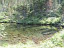 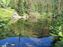 Закаленный байкальской водой, Алексей не замедлил искупаться, а не привыкший ходить по камням Андрюшка не замедля упал и разбил голову. Слез конечно было больше, чем крови, промыли маленькую ранку, завязали Юлиной косынкой, дали шоколадку. Но ребенок устал, загундел, у меня еще и глаз опять нифига не видит и болит, сплошная невезуха. Леха грибы хорошие нашел, Юля дальше пробежалась по тропе,
на цирк глянуть, там красиво, но мы туда в другой раз сходим. Обратно
идти Андрюшка совсем устал, взял его на руки и он сразу вырубился, проснулся
только на подходе к зимухе. Пошел кормить местного жителя, накидал бурундуку
вермишели в дупло. Раскатали рубероид, 15 метров, на три части разрезали
и уложили на крышу, как раз до ветренной грозы успели. Вечер провели
по зимнему, при газовой лампе в натопленой зимухе, ужин, чаепитие, побыстрей
наверх и уснуть, глаз закрытый меньше болит. 20.08.2006. Обратно ехать конечно веселее, если не считать болото
и каменюжник. Но веселее и быстрее однозначно, Андрюха все дорогу кричал
"Мы банда!", чем помогал мне перезжать лужи и ручьи. Юля ехала
тише и осторожнее, однако пару раз кувыркнулась. Леха ушел раньше нас,
и хотя мы его потом обогнали, он все равно не отставал. Итоги спуска
до шлагбаума получились такие: Дальше была равнина, поваленная на дорогу вчерашним ветром ель, сладкая малина под ЛЭПом, купание велосов в ручье и Алексея в Байкале, загрузка в странного поведения электричку, которая прибыла на другой перрон да еще и опоздала в Слюдянку. Ну да Леха и Юля успели на иркутскую, а нам с Андрюхой торопиться и некуда, уже приехали... PS: обратно дорога заняла 1:13 при средней скорости 8 км\ч, это от зимухи до станции. PS2: в понедельник в больнице вытащили из глаза микроуголек, остаток искры. Глазон красный, потом еще три дня в него капли заливал. Андрюшка в садике сверкал зеленой шишкой на голове. Однако, dont worry и Be Happy ! Сейчас вспоминается только хорошее... Сентябрь 2006. Белокрылов А.Ю. Слюдянка. |
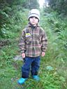 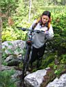 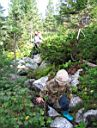 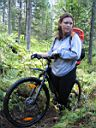 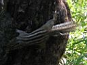 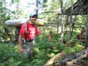 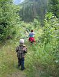 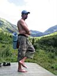 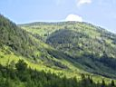 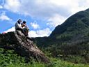 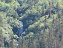 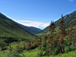 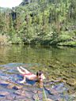 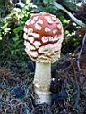 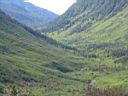 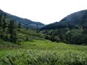 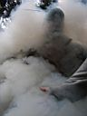 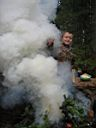 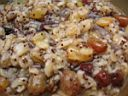 |